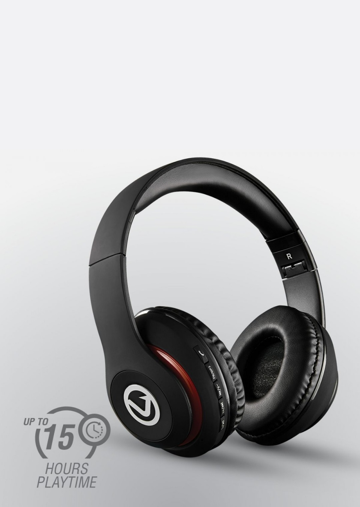
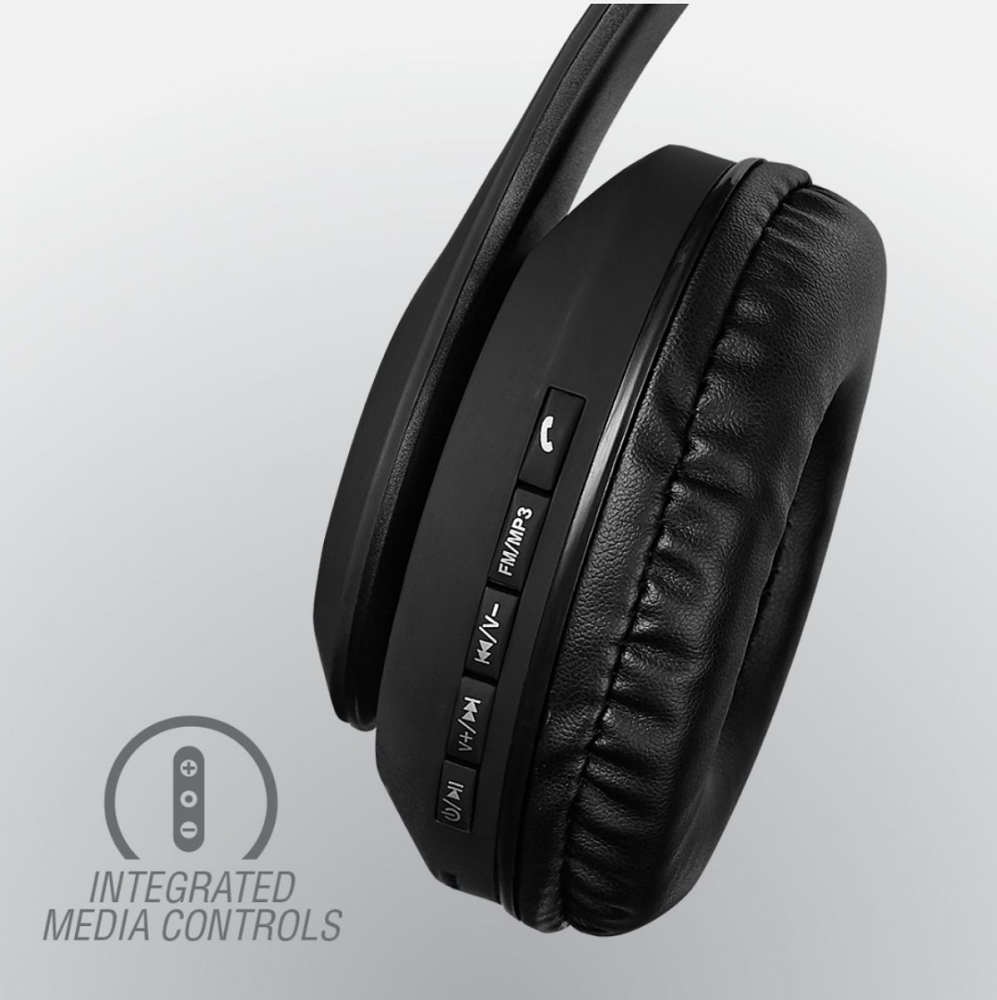

This is not a safe space for impulse control - In fact, you re going to have to give in and be impulsive to see what all the hype is about!
The Impulse Series by Volkano is not to be overlooked. Praised for the punch it packs at a great price, these comfortable Bluetooth headphones are a must have. They cater to our diverse consumer who, additionally to Bluetooth, prefers multiple input options for their music. With a built in FM-Radio Function, a Micro SD Card reader as well as an aux input jack - I am confident that the Impulse series has all you need
With an EXTENDED playtime of up to 15 hours from a charge time of just 1 hour, the Impulse series promises to keep you jamming during extended periods of wearing. Hands-free technology allows you to walk and talk with minimal distraction. Look Ma, No Hands!
FM RADIO HEADPHONES - Built-in FM radio and integrated SD Card reader so you can use a Micro SD card with loaded MP3 music and listen to the songs directly on your headphones. Play music from a card with one-touch ear-cup fingertip controls. To connect to FM stations, touch the "FM/MP3" button, and the "Power/Play" button to auto-scan stations; fine-tune your station by pressing the volume button
BLUETOOTH 5.0 - Its multi-functional power button makes pairing to compatible devices quick and easy. Compatible with: Android, Samsung Galaxy, iPhone, iPad, Laptop, Google Pixel, and other smart devices. Alternatively connect your devices via a cable and use as wired headphones by connecting inserting the 3.5 mm audio cable into the headphones Aux input port, then connect the other end with the audio output jack of your mobile phone, MP3 player, or PC (Includes a 3.5mm auxiliary cable.
FEATURES AND BENEFITS
Folding frame
Built-in FM Radio
Hands-free Calling
SD Card Slot
Up to 15 Hour Playtime
Specifications:
Bluetooth Version: 5.0
Range: 10 m / 33 ft
Charge Input: 5 V DC
Charge Time: 1 Hour
Playback Time: 12 - 15 Hours
Driver Size: 40 m
Frequency: 2.402 - 2.480 GHz
Whats in the package?
1 x Volkano Impulse Bluetooth Headphones
1 x USB Charging Cable
1 x Aux Cable
1 x Instruction Manual
| Catagory | TV, Audio & Video / Audio / Headphones & Headsets / Standard Headphones |
|---|---|
| Brand | Volkano |
| Warranty | 12months (limited) |
| CPU Type | AMD Ryzen 5 |
| is Portable | Yes |
| is Rechargable | yes |
| Fit/stly/type | over the ear |
| Basic colors | Black |
| Barcode | 4711081785651 |